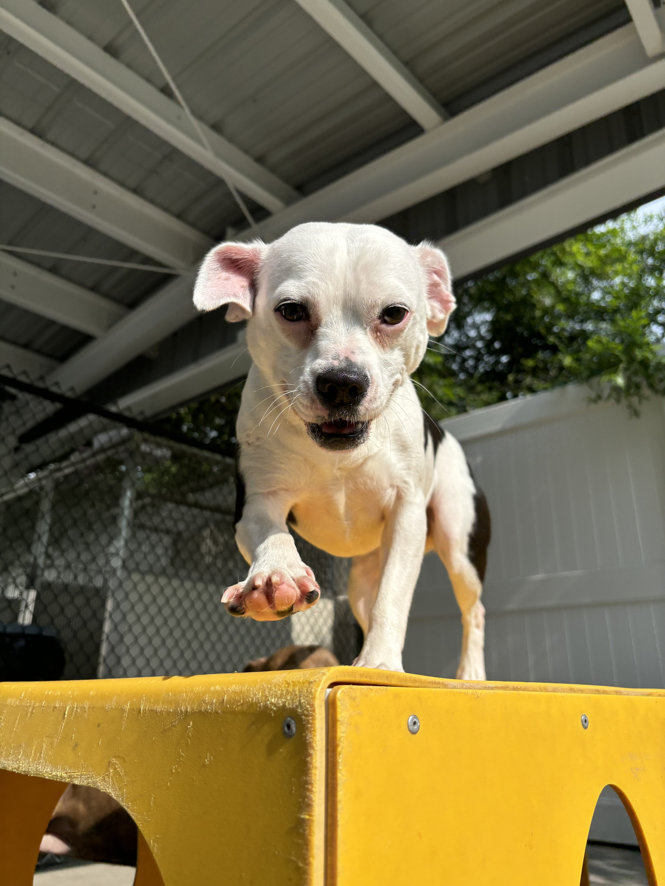
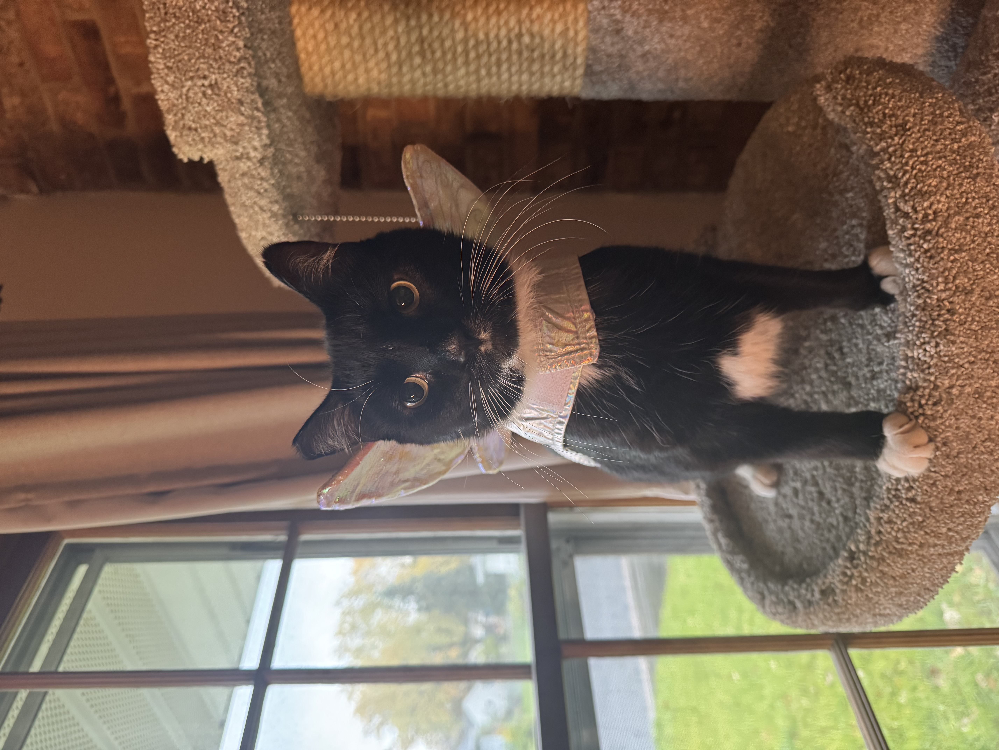
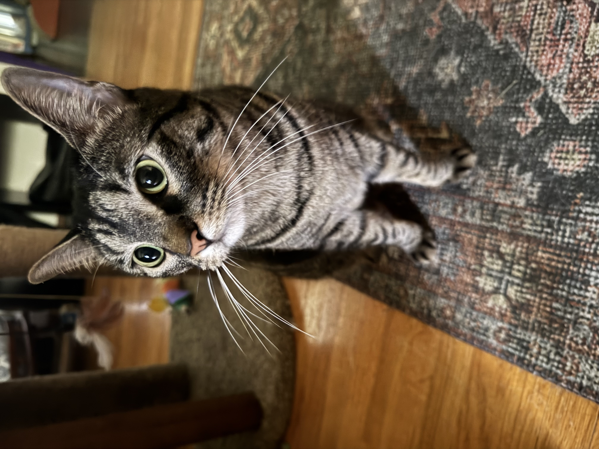

Cece

Cece is a 3 year old black cat. She loves to cuddle and play with toys.
Bruce

Bruce is a 4 year old (we think) tuxedo cat. We adopted Bruce through an adoption event in Eden Prarie, Minnesota. He was apart of a program where they capture stray cats and get them fixed and vaccinated before putting releasing them back out in to the wild, except Bruce didn't want to leave once he was inside. Bruce is still learning how to be an inside cat. His favorite things are to eat, sleep, and lay in any warm-lap he comes across.
Bonnie

Bonnie is a 4 year old pittbull. We got Bonnie while we were stationed out in the high-desert of California. Bonnie was the runt of her litter and wanted to have no part in the rough play from the rest of her litt er. Bonnie is typically scared of things around her she doesn't understand so when she isn't on guard dog duties. Bonnie's favorite things include sleeping, sleeping, going on car rides, taking long walks.
Nori

Nori is a 2 year old tabby cat that we adopted in 2024. She was very sweet when we went to adopt her then when we took her home she was a ball of energy. Nori loves to play any chance she can get. She is quite shy and only likes to show affection when other people and animals aren't around. Nori's favorite companions to be around are my wife, Bonnie, and Bruce, though she tries to play with Cece.